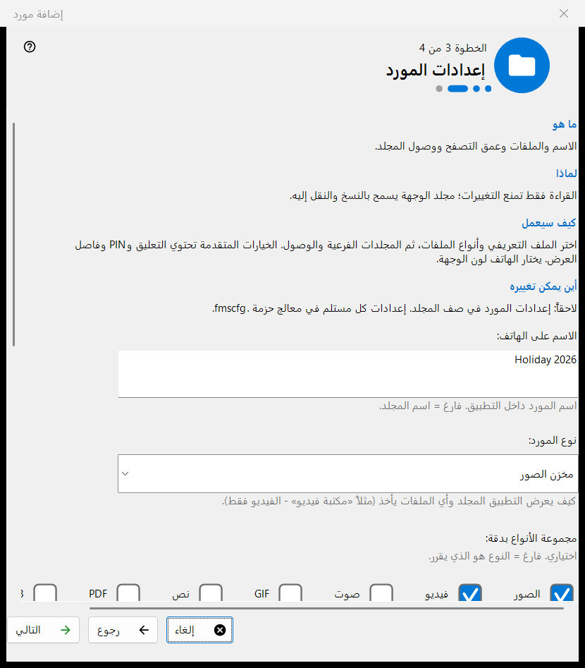
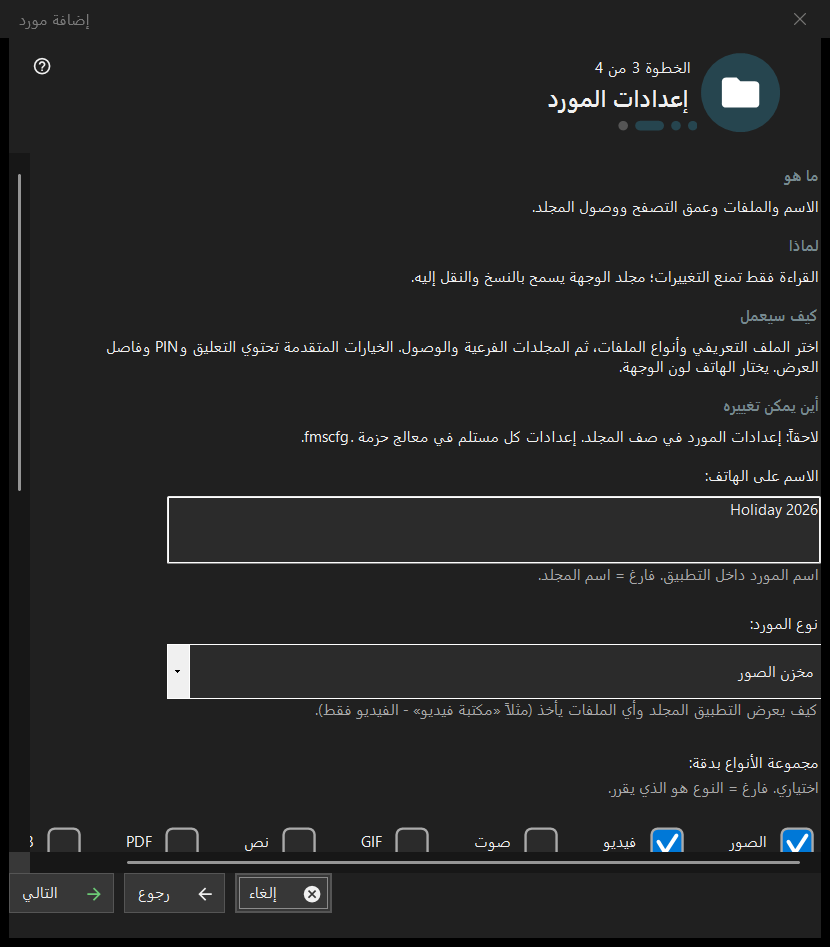

إضافة مورد
الغرض من هذه النافذة
معالج قصير يضيف مورداً مشتركاً واحداً: مجلداً أو قرص FileDO مفتوحاً بالفعل. يُفتح من عنصر معالج إضافة الموارد.. في قائمة إضافة ومن تدفق التشغيل الأول، وينتهي بإضافة المورد إلى قائمة المشاركة.


بهذا الترتيب
- اقرأ ما هو المورد واضغط التالي.
- اضغط اختر مجلداً.. وحدّد المجلد.
- اضبط الاسم والنوع والوصول في صفحة إعدادات المورد.
- راجع الملخص واضغط إنهاء.
- استخدم أزرار الصفحة الأخيرة لعرض رمز QR أو لفتح الإعدادات.
عناصر النافذة
ما هو المورد
المورد هو مجلد أو قرص FileDO افتراضي مفتوح يصل إليه العارض عبر هذا الكمبيوتر. تبقى الملفات على الكمبيوتر؛ ويتصفحها الهاتف وينسخها عبر الاتصال، والمجلد المحدّد في القائمة هو الذي يُقدَّم.
اختيار مجلد
اختر مجلداً.. يفتح أداة اختيار المجلد المعتادة، وأقراص FileDO.. تسرد الأقراص المفتوحة. المجلد الموجود في القائمة يُرفض برسالة هذا المجلد موجود بالفعل في القائمة. اختر أقراص FileDO المفتوحة بالفعل؛ فالمعالج لا ينشئها ولا يركّبها.
إعدادات المورد
الاسم على الهاتف، والنوع، ومجموعة الوسائط بدقة، وشروط الفحص، وصلاحية الوصول. للقراءة فقط يمنع التغييرات؛ والمجلد الوجهة يسمح بنسخ الملفات ونقلها إليه. خيارات متقدمة تضم التعليق وPIN وفاصل عرض الشرائح. لون الوجهة يحدده الهاتف.
المورد والإجراءات التالية
إنهاء يحفظ الإعدادات ويضيف المورد؛ وقبل ذلك لا يغيّر الإلغاء شيئاً. تذكر الصفحة الأخيرة هل المورد يُقدَّم. إذا كان الخادم متوقفاً فلا يراه الهاتف بعد؛ وإذا لم يتأكد التقديم فتحقّق من الإعدادات. عرض رمز QR يفتح رمز الوصول، والإعدادات.. تفتح إعدادات المدير، وإغلاق يغادر المعالج.